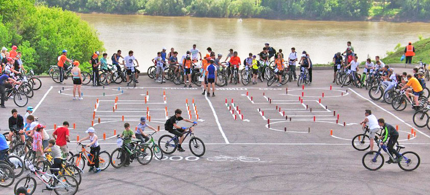
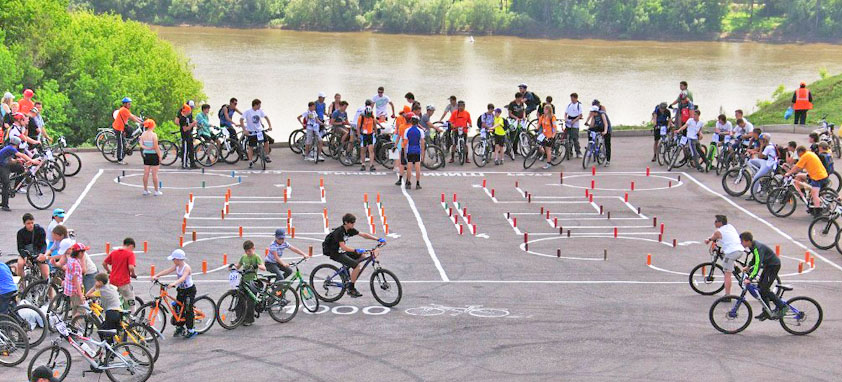

ГЛАВНОЕ ВЕЛОМЕРОПРИЯТИЕ ГОДА
Фотографии
{kind=link}
Велопробег
{kind=link}
{kind=link}
{kind=link}
{kind=link}
Почетные гости
{kind=link}
Спонсорам
Воспользуйтесь шансом рассказать о своем бизнесе широко и громко на нашем Фестивале, примите участие в развитии социального проекта.
Как общественное мероприятие, “День 1000 велосипедистов” может быть поддержан бизнесами любого размера. Размер окончательного взноса на это мероприятие может быть адаптирован именно под Вашу организацию и Ваш бюджет.
Ваши возможности:
- использовать в рекламных целях пакет участника
- рекламные материалы в печатном и электронном виде
Посещаемость нашего сайта составляет более 7500 уникальных посетителей за месяц. Контингент группы социальной сети “Вконтакте” достигает 2000 человек.
По всем вопросам о спонсорской и партнерской поддержке вы можете обращаться по тел.:89373201360 или по email: org@veloufa.ru c пометкой "Партнеры 1000"
Партнерам и клубам
Участвуй в велопараде и создай свою площадку на фестивале!
Собирайте команду, вместе с друзьями, со всеми велосипедистами города, устроим грандиозный велопарад. Помимо участия в велопараде вы можете организовать площадку в рамках фестиваля велосипедных видов спорта. Площадка может быть не посвящена спорту, но должна отвечать велосипедной тематике, может нести в себе рекламный контент и также укладываться в рамках цензуры.
Волонтерам
Если вы хотите стать частью крупного культурного события, познакомиться с новыми людьми и весело провести время вы можете помочь в организации фестиваля. Делитесь идеями, помогайте реализовывать наши, пишите на org@veloufa.ru c указанием темы "Волонтеры 1000".
В каких сферах деятельности необходима помощь:
- пиар, распространение флаеров (рисовальщики и видеографы Welcome!, а также просто руки готовые разнести флаеры по магазинам);
- регистрация участников на месте (горсовет);
- движение колонны велосипедистов (сопровождение и построение);
- проведение спортивных соревнований (помощь в постановке-разметке трасс, подготовке необходимого антуража);
- проведение конкурсов (идеи, руки, материалы!);
- физический труд.
Площадки фестиваля на 2013 год:
- Дерт (показательные выступления);
- Фигурное вождение;
- Фигурное вождение (дети);
- Кросс-кантри;
- Скоростной заезд (дети);
- Конкурсная площадка (словесная);
- Конкурсная площадка (активная);
- BMX&MTB Street (соревнования);
- Downhill (соревнования);
- Trial (соревнования);
- Детская площадка.
Репортаж
Интервью о празднике
Велопробег
Как это было – взгляд участника
У вас есть велосипед? Приезжайте и участвуйте! Будет весело и очень круто!
19 мая 2013 года в Уфе состоится «День 1000 велосипедистов» — городской спортивный праздник велодвижения. Все желающие смогут поучаствовать в велопараде, проехать по главным улицам города вместе с другими велосипедистами вне зависимости от физподготовки и возраста. Непосредственно на самом фестивале гости праздника смогут посмотреть на показательные выступления спортсменов дисциплин стрит BMX, стрит MTB, даунхил и триал. Поучаствовать в соревнованиях на скорость и испытать себя на трассе фигурного вождения. Программа праздника будет интересной как для самых маленьких, так и для взрослых. Игры, конкурсы, эстафеты! Всех активных участников фестиваля и победителей соревнований ждут призы и подарки!
Отчет за 2012 год
В 2012 году праздник был проведен в формате фестиваля велосипедных видов спорта.Официально зарегистрированных участников было более 1300 человек. Традиционно мероприятие началось с велопробега. Проезжавшим по улицам города велосипедистам апплодировали прохожие пешеходы, сигналили восторженные водители встречной полосы движения. Возрастная категория участников колеблилась от 3 лет до 80. Маленькие дети сидели на специальных креслах за спинами своих родителей. Было приятно видеть велосипеды разных категорий: горные, кантрийные, городские, шоссейные велосипед, больших и маленьких размеров, тандемы, специальные коляски и прицепы.
подробнее...Отчет за 2011 год
14 мая 2011 года состоялся первый в Уфе «День 1000 велосипедистов» – городской спортивный праздник, приуроченный 1000 дней до начала XXII Зимних Олимпийских Игр 2014 в Сочи. Программа дня включала в себя велопроезд по городу, зрелищные соревнования по даунхилу и шоу-программу по триалу. Велосипедисты города организованной массой прокатились по маршруту: от пл. имени Ленина(Горсовет) по проспекту Октября и ул. 50 лет Октября, через ул. Революционная, по ул. Ленина, ул. Пушкина, ул. Гафури, до спортивной площадки «Конгресс Холл». Всего в велопробеге участвовало около 370 человек, к которым на площадке перед памятником Салавату Юлаеву присоединились еще и обычные зрители.
подробнее...Связаться с нами
Пожелания, вопросы и предложения Вы можете писать нам на email org@veloufa.ru. Мы постараемся ответить Вам как можно оперативнее! Благодарим Вас за проявленный интерес!